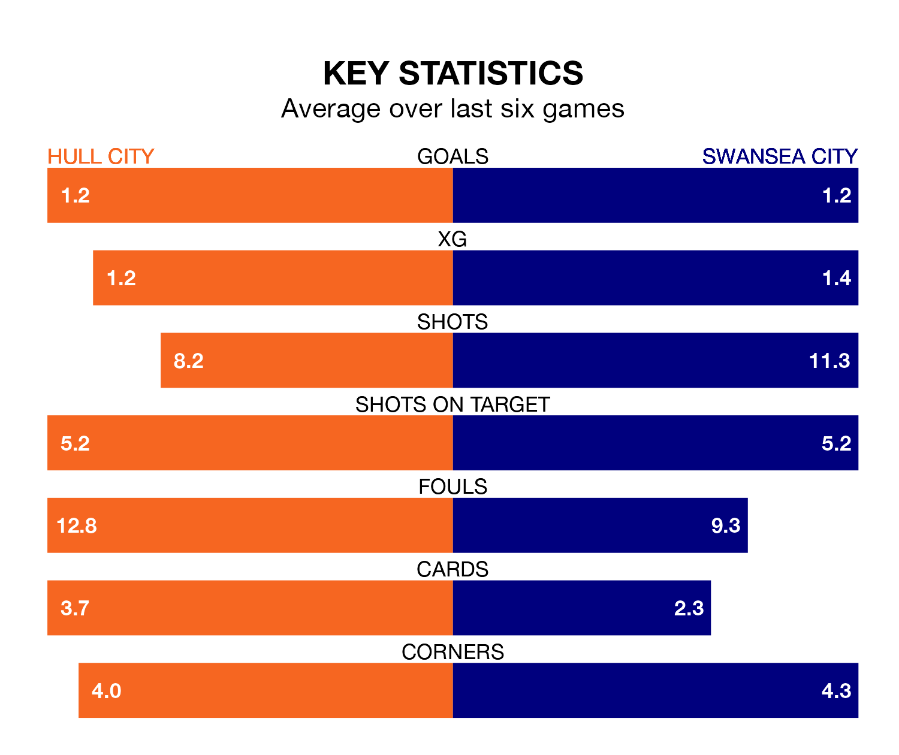

Swansea City make the journey to the MKM Stadium to play Hull City on Saturday looking to pick up points to end their three-game losing streak.
Swansea's struggles have left them with five points from their last six EFL Championship matches, while their opponents have earned nine from a possible 18.
In the last 10 years, Hull and Swansea have played each other on 16 occasions. Hull won seven of them, Swansea four, and they drew five times.
On average, the Tigers scored 1.5 goals and the Swans 1.3 in those matches.
Their last meeting was on November 25, when they played out a 2-2 draw.
With 43 goals in 29 games so far this season, Hull are scoring more than average in the league with 1.5 goals per game. And they are conceding fewer than average, letting in 38 goals at a rate of 1.3 per game.
Swansea, meanwhile, are below average scorers, with 1.3 goals per game, compared to a league average of 1.4. They have conceded 1.6 goals per game.
Hull City are sixth in the table after 29 games, of which they have won 13 and drawn six, earning 45 points.
Swansea City are 11 places behind the Tigers in 17th, with eight wins and nine draws putting them on 33 points.
In Joël Piroe, the Swans have one of the league's most on-form strikers so far this season. He has notched 10 goals in 29 appearances, to sit eighth in the scoring charts.
His goal rate of one every 214 minutes is slightly quicker than that of Aaron Anthony Connolly, the hosts' top scorer with a goal every 143 minutes, and a total of eight goals in 24 games.
Hull's last match was on February 3, a 1-0 win against Millwall, with Jaden Philogene getting the goal for the Tigers.
Swansea lost 1-0 against Plymouth Argyle last time out, also on February 3.
Updated: 11:18 (UTC), 08/02/24